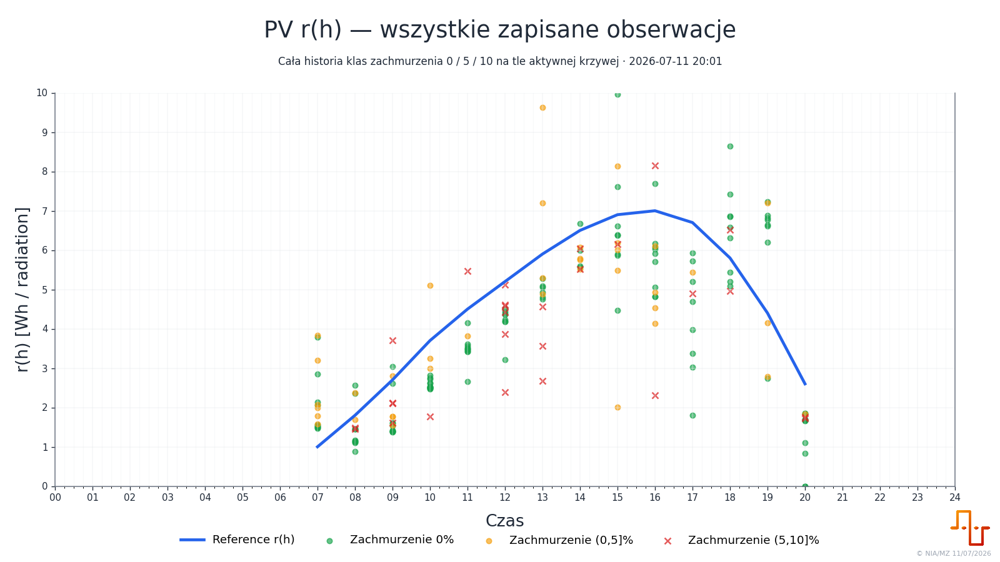
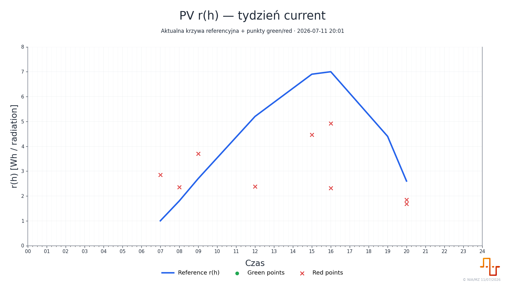
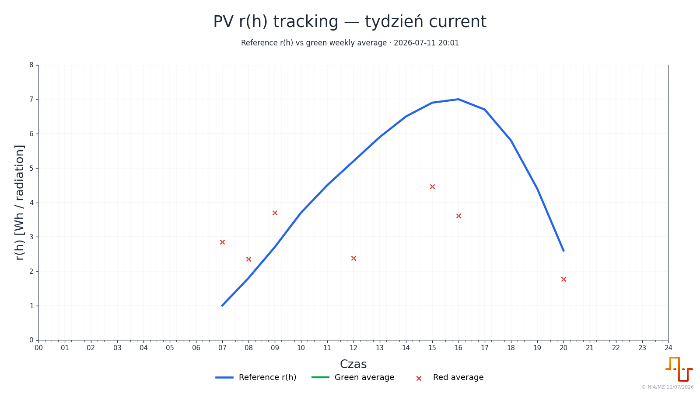

Formalni kandydaci
10
Tydzień 2026-W28: 2026-07-06 – 2026-07-12
Formalni kandydaci
10
Punkty green
0
Punkty red
10
Cały rejestr r
246
Skrypt oblicza r = actual_pv_Wh / radiation, zachowuje obserwacje dla klas zachmurzenia 0/5/10 i porównuje formalnych kandydatów z aktywną krzywą referencyjną.
Klasa zachmurzenia 0%
171
Klasa (0,5]%
44
Klasa (5,10]%
31
Zachowane decyzje
10
Cała historia rejestru dla godzin produkcyjnych, rozdzielona według klas prognozowanego zachmurzenia.

Formalni kandydaci aktualnego tygodnia na tle aktywnej krzywej referencyjnej.

Porównanie aktywnej krzywej z godzinową średnią punktów green i red.

Czy średnia punktów green wskazuje stabilność, wzrost lub spadek krzywej.
| Godzina | Reference r | Green avg | Red avg | Delta green vs ref [%] | Green | Red | Movement hint |
|---|---|---|---|---|---|---|---|
| 07 | 1.0000 | 2.8571 | 0 | 1 | no_green_points | ||
| 08 | 1.8000 | 2.3599 | 0 | 1 | no_green_points | ||
| 09 | 2.7000 | 3.7037 | 0 | 1 | no_green_points | ||
| 10 | 3.7000 | 0 | 0 | no_green_points | |||
| 11 | 4.5000 | 0 | 0 | no_green_points | |||
| 12 | 5.2000 | 2.3866 | 0 | 1 | no_green_points | ||
| 13 | 5.9000 | 0 | 0 | no_green_points | |||
| 14 | 6.5000 | 0 | 0 | no_green_points | |||
| 15 | 6.9000 | 4.4660 | 0 | 1 | no_green_points | ||
| 16 | 7.0000 | 3.6178 | 0 | 2 | no_green_points | ||
| 17 | 6.7000 | 0 | 0 | no_green_points | |||
| 18 | 5.8000 | 0 | 0 | no_green_points | |||
| 19 | 4.4000 | 12.9944 | 0 | 1 | no_green_points | ||
| 20 | 2.6000 | 1.7663 | 0 | 2 | no_green_points |
Godziny w wierszach, a wartości i klasyfikacja każdego dnia w kolejnych kolumnach.
| Godz. | Reference r | 2026-07-06 r | 2026-07-06 set | 2026-07-07 r | 2026-07-07 set | 2026-07-08 r | 2026-07-08 set | 2026-07-09 r | 2026-07-09 set | 2026-07-10 r | 2026-07-10 set | 2026-07-11 r | 2026-07-11 set | 2026-07-12 r | 2026-07-12 set |
|---|---|---|---|---|---|---|---|---|---|---|---|---|---|---|---|
| 07 | 1.0000 | 2.8571 | red | ||||||||||||
| 08 | 1.8000 | 2.3599 | red | ||||||||||||
| 09 | 2.7000 | 3.7037 | red | ||||||||||||
| 10 | 3.7000 | ||||||||||||||
| 11 | 4.5000 | ||||||||||||||
| 12 | 5.2000 | 2.3866 | red | ||||||||||||
| 13 | 5.9000 | ||||||||||||||
| 14 | 6.5000 | ||||||||||||||
| 15 | 6.9000 | 4.4660 | red | ||||||||||||
| 16 | 7.0000 | 2.3132 | red | 4.9223 | red | ||||||||||
| 17 | 6.7000 | ||||||||||||||
| 18 | 5.8000 | ||||||||||||||
| 19 | 4.4000 | 12.9944 | red | ||||||||||||
| 20 | 2.6000 | 1.6807 | red | 1.8519 | red |
Formalni kandydaci odrzuceni automatycznie lub przez zachowaną wcześniejszą decyzję.
| Data | Godzina | r | Reference r | Deviation [%] | Reason |
|---|---|---|---|---|---|
| 2026-07-08 | 07 | 2.8571 | 1.0000 | 185.7 | above_reference_plus_20_pct |
| 2026-07-08 | 09 | 3.7037 | 2.7000 | 37.2 | above_reference_plus_20_pct |
| 2026-07-08 | 19 | 12.9944 | 4.4000 | 195.3 | above_reference_plus_20_pct |
| 2026-07-08 | 20 | 1.6807 | 2.6000 | -35.4 | below_reference_minus_10_pct |
| 2026-07-09 | 08 | 2.3599 | 1.8000 | 31.1 | above_reference_plus_20_pct |
| 2026-07-09 | 12 | 2.3866 | 5.2000 | -54.1 | below_reference_minus_10_pct |
| 2026-07-09 | 15 | 4.4660 | 6.9000 | -35.3 | below_reference_minus_10_pct |
| 2026-07-09 | 16 | 2.3132 | 7.0000 | -67.0 | below_reference_minus_10_pct |
| 2026-07-10 | 20 | 1.8519 | 2.6000 | -28.8 | below_reference_minus_10_pct |
| 2026-07-11 | 16 | 4.9223 | 7.0000 | -29.7 | below_reference_minus_10_pct |
Pliki są umieszczone w paczce strony i otwierają się przez ścieżki względne.